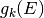
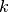
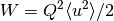
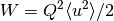
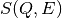

ComputeIncoherentDOS dialog.
Table of Contents
Calculates the neutron weighted generalised phonon density of states in the incoherent approximation from a measured powder INS MatrixWorkspace
| Name | Direction | Type | Default | Description |
|---|---|---|---|---|
| InputWorkspace | Input | MatrixWorkspace | Mandatory | Input MatrixWorkspace containing the reduced inelastic neutron spectrum in (Q,E) or (2theta,E) space. |
| Temperature | Input | number | 300 | Sample temperature in Kelvin. |
| MeanSquareDisplacement | Input | number | 0 | Average mean square displacement in Angstrom^2. |
| QSumRange | Input | string | 0,Qmax | Range in Q (in Angstroms^-1) to sum data over. |
| EnergyBinning | Input | string | 0,Emax/50,Emax*0.9 | Energy binning parameters [Emin, Emax] or [Emin, Estep, Emax] in meV. |
| Wavenumbers | Input | boolean | False | Should the output be in Wavenumbers (cm^-1)? |
| StatesPerEnergy | Input | boolean | False | Should the output be in states per unit energy rather than mb/sr/fu/energy? (Only for pure elements, need to set the sample material information) |
| OutputWorkspace | Output | MatrixWorkspace | Mandatory | Output workspace name. |
| TwoThetaSumRange | Input | string | Twothetamin, Twothetamax | Range in 2theta (in degrees) to sum data over. |
Computes the phonon density of states from an inelastic neutron scattering measurement of a powder or polycrystalline sample, assuming that all scattering is incoherent, using the formula for the 1-phonon incoherent scattering function [1]:
![S^{(1)}_{\mathrm{inc}}(Q,E) = \exp\left(-2\bar{W}(Q)\right) \frac{Q^2}{E} \langle n+\frac{1}{2}\pm\frac{1}{2} \rangle \left[ \sum_k \frac{\sigma_k^{\mathrm{scatt}}}{2m_k} g_k(E) \right],](../_images/math/812641434b75be8752b99b9cd0b6406775c5f2a2.png)
where the term in square brackets is the neutron weighted density of
states which is calculated by this algorithm, and  is
the partial density of states for each component (element or isotope)
 in the material.  is the relative atomic mass of the
component.
is the relative atomic mass of the
component.
The average Debye-Waller factor  is
calculated using an average mean-square displacement
is
calculated using an average mean-square displacement  ,
using .
,
using .
The algorithm accepts both  workspaces as well as
 workspaces. In the latter case
workspaces. In the latter case  values are
calculated from
values are
calculated from  and
and  before applying the formula
above. Note, that QSumRange is only applicable with while
TwoThetaSumRange works only for .
before applying the formula
above. Note, that QSumRange is only applicable with while
TwoThetaSumRange works only for .
If the data has been normalised to a Vanadium standard measurement, the output of this algorithm is the neutron weighted density of states in milibarns/steradians per formula unit per meV (or per cm^-1). If the sample material has been set and is found to be a pure element, then an additional option will be enabled to calculate the DOS in states per meV (states per cm^-1) by dividing by the scattering cross-section and multiplying by the relative atomic mass.
The input workspace must have units of Momentum Transfer or Degrees and contain histogram data with common binning on all spectra.
Note
To run these usage examples please first download the usage data, and add these to your path. In MantidPlot this is done using Manage User Directories.
ISIS Example
The following code will run a reduction on a MARI (ISIS) dataset and apply the algorithm to the reduced data. The datafiles (runs 21334, 21335, 21347) and map file ‘mari_res2013.map’ should be in your path. Run number 21335 is a measurement of a large Aluminium sample from the neutron training course.
from Direct import DirectEnergyConversion
from mantid.simpleapi import *
rd = DirectEnergyConversion.DirectEnergyConversion('MARI')
ws = rd.convert_to_energy(21334, 21335, 60, [-55,0.05,55], 'mari_res2013.map',
monovan_run=21347, sample_mass=106.4, sample_rmm=27, monovan_mapfile='mari_res2013.map')
ws_sqw = SofQW3(ws, [0,0.1,12], 'Direct', 60)
SetSampleMaterial(ws_sqw,'Al')
ws_dos = ComputeIncoherentDOS(ws_sqw, Temperature=5, StatesPerEnergy=True)
ILL Example using S(2theta, E) as input
from mantid import mtd
from mantid.simpleapi import *
import matplotlib.pyplot as plt
ws = DirectILLCollectData('ILL/IN4/087294.nxs')
DirectILLReduction(ws, OutputWorkspace='sqw', OutputSofThetaEnergyWorkspace='stw')
temperature = ws.run().getProperty('sample.temperature').value
dos = ComputeIncoherentDOS('stw', Temperature=temperature, EnergyBinning='0, Emax')
fig, axis = plt.subplots(subplot_kw={'projection':'mantid'})
axis.errorbar(dos)
axis.set_title('Density of states from $S(2\\theta,W)$')
# Uncomment the line below to show the plot.
#fig.show()
mtd.clear()
(Source code, png, hires.png, pdf)

Test Example
This example uses a generated dataset so that it will run on automated tests of the build system where the above datafiles do not exist.
ws = CreateSampleWorkspace(binWidth = 0.1, XMin = 0, XMax = 50, XUnit = 'DeltaE')
ws = ScaleX(ws, -25, "Add")
LoadInstrument(ws, InstrumentName='MARI', RewriteSpectraMap = True)
ws = SofQW(ws, [0, 0.05, 8], 'Direct', 25)
ws_DOS = ComputeIncoherentDOS(ws)
Output
| [1] | Thermodynamic Properties of Solids, eds. Chaplot, Mittal, Choudhury, Chapter 3 |
Categories: AlgorithmIndex | Inelastic
Python: ComputeIncoherentDOS.py (last modified: 2018-11-12)
{kind=link}
{kind=link}